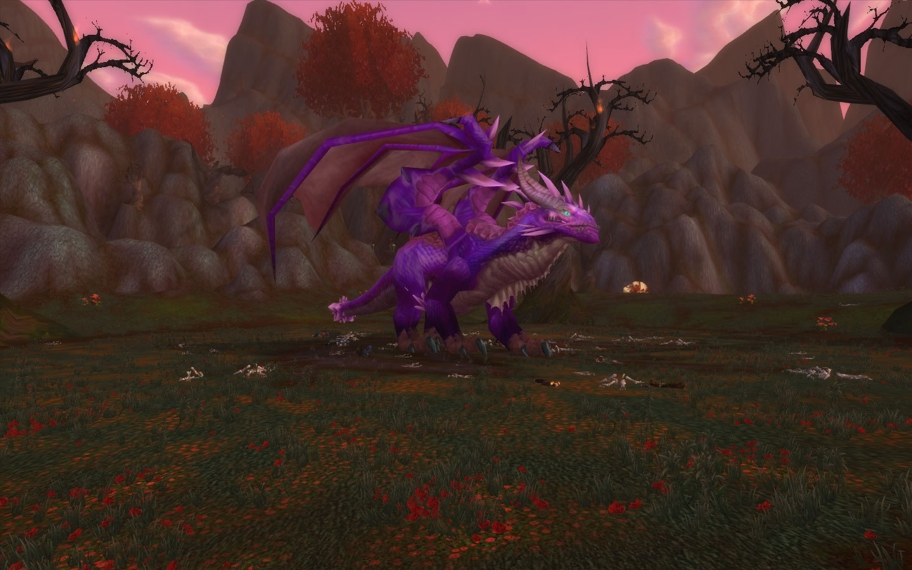

|| Reglas de Sr 25N ||
Escama Crepuscular carbonizada:
(Casters) 2k de diferencia (Caza no!) Dentro del Top 3 ((caso de no haber TOP recorrer al top 5 ))
Escama Crepuscular resplandeciente:
Top 2 Fisco y Crepuscular (Heal) con 2k de diferincia / sacer DICI top1 en skada + limpieza mundo crepu (en Recount de TANKES)
Escama Crepuscular petrificada:
Solo Tanques, en caso de que ya lo tengan Dual mostrando equipo 5.7 GS y talentos. (Tanques)
Escama Crepuscular afilada:
Top 3 Meles (Crepu) y el Primer Cazador (Fisico)*Diferencia no mayor a 2K DPS al primer Dps Crepu o Primer Caza // Paladin No lotea ni por main o dual
NOTA!!
-En caso de que un Caster o Heal quieran Lotear diferente de lo que vienen se respeta el Top Ya añadido, Mostrando Talentos activos, Escama main y Ropa Decente PVE engemado y encantado (5.8 Gs Min) ( ojo deve topear por escama de heal para poder ganar la de caster u otra)
-En caso de que un Dps (Mele) quiera lotear de tanque se respeta el Top ya dicho, Mostrando Talentos activos y Ropa Decente PVE (5.8 Gs Min)
Armaduras
- [Capa de ocaso ardiente]: Caster, Chaman Heal y Sacer paladin heal
- [Brazales de noche ígnea]: Caster tela (Mago, Sombras, Brujo)
- [Brazales de cambio de fase]: Druida (Pollo) en caso de que no haiga pollo Dual (Chaman Heal, Druida Heal, Pala Heal y Chaman Caster.)
- [Bandas agraviadas]: Druida (Feral) y Picaro en caso de(Paladines Retri) deve tener las botas 271 dps
- [Cinturón de forma partida]: Chamanes (Heal o Caster) en caso de que no haiga o no necesite ninguno Dual Paladin (Heal)
- [Pisadas de regreso]: Cazadores en caso de que ya tengan Dual Chamanes (Mejora)
- [Avanzado del Apocalipsis]: Paladines (Retri), Caballero de la Muerte (loot main profano) y Warrior (Furia) Pueden Lotear Siempre y cuando tengan escama 271 y Cuello 271 y glorent
- [Pasos de vaticinio]: Paladines (Heal) en caso de que no haiga ninguno Dual paladine
- [Botines de resurrección inminente]: Los tanques tanto Fisico como Crepuscular, en caso de que ambos tengan Duales Talentos Activos Armadura decente (5.7 Gs Min)
- [Colgante de lobreguez]: Warrior (Furia) y Caballero de la Muerte (Escarcha Dps)
- [Anillo de regeneración por fase]: Chamanes (Heal) y Paladin (Heal)
- [Sello de crepúsculo]: Cazadores bestias , Picaro asecinato y Chaman (Mejora), En caso de (Paladin Retri). deve tener las botas apocalipsis 271
NOTA!!
-El que Muere no Lotea sin Derecho a reclamo, se tomara en cuenta cómo y por qué murió si no es su responsabilidad se le dará opción a loteo depende a el Criterio del líder y Ayudantes
-El que no hace caso (No se mueve rápido con el Consumo o Combustión) -10 en dados y si ocasiona Wipe por ello Expulsión de la banda sin derecho a reclamo.
-Para lotear Cualquier ítem se les Pedirá que hagan caso y estén atentos caso contrario se les descontara a decicion del Lider
|| Reglas de Sr 10H ||
Botines de sucesor:
Tankes Placa
Brazales del heredero:
Warrior
Botas de ser dividido:
Chamanes
Guantes cambiadores
Pollo
Sark anochecedor
Picaros y Feral oso
Cinturón desdichador:
Casters
Capa de abducción:
Chaman Heal y Pala Heal
Ofrenda de Zarithrian:
WARR y Dks
Tributo a Saviana
Casters
Obsequio de Baltharus
Picaro Asesinato, Feral Oso, Chaman Mejora y Pala agilidad
NOTA!!
Castigos :
Se Descontara dados A aquellos q no cumplan con su rol.. Muertes/ Wipes (-20) acumulable

Staff
Borest
Dkrcock
Sairon
Adilson
Chura
Ragdol
contactos
politica y privacidad
cokies
Copyright 2021- 2021 Angel Technology Inc. Todos los derechos reservados.